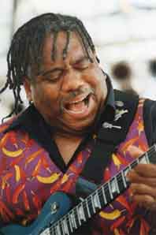

Michael Hill

Майкл Хилл, нью-йоркский блюзовый музыкант, настоящий корифей блюза. Своим восхищением от его живого исполнения с вами может поделиться любой из тысячи людей, присутствовавших на концерте под сильнейшей грозой во время Чикагского Блюзового Фестиваля. Майкл Хилл стоял под раскатами грома, среди молодых афро-американских музыкантов, и всей своей программой доказывал, что блюз будет всегда.Журнал "Blues Review" провозгласил Майкла Хилла блюзменом, ориентированным в 21 век. В каждой песне Майкла Хилла чувствуется большая энергия, первозданная красота и эмоциональная насыщенность. Ему присуща безмятежность, порой юмористичность, душевность и взрывная гитарная игра. Все это прекрасно сочетается и дополняется музыкальностью Пита Камминга (Pete Cummings) на басу, Е.J "Профессора" Sharpe на клавишных и Тони Льюиса (Tony Lewis) на барабанах. Их новый релиз, вышедший на лейбле "Аллигатор" - "Нью-Йорк - Штат Блюза" продолжает закрывать белые пятна современного блюза.
Он написал много нового для этого релиза (музыкант является автором 9 из 11 песен альбома). Своим оригинальным материалом Хилл и его команда уверенно поднимают планку современного блюза, который, прежде всего, обращен к корням. "Это зажигательная, просто чудесная смесь ритм-н-блюза, блюза, фьюжн и тяжелого рока и регги. - замечает "Guitar Shop"- Но это просто музыкальная феерия". И далее продолжает уже сам музыкант: "Для меня написание песен также важно, как и игра на гитаре. Блюз - это как рассказ историй. Гитарная игра и общее музыкальное сопровождение лишь оформляют песню. Стихи дают непосредственно предмет, то, о чем я пою".
"Нью-Йорк - штат Блюза" - является своеобразным путешествием. Это настоящее искушение для любителей блюза, - рслушать гитарное исполнение Хилла с его удивительной многомерностью и полиритмичностью. Альбом открывается с "Long Hot Night" (песня написана в соавторстве с Vernon Reid), далее следует пророческая и смешная "Young Folks Blues". А потом опять возвращение к корням в Papa’s Was a Rolling Stone и следующая за ней песня Стиви Уандера Livin’ for the City. Потом идет задушевная и нежная Never Give Up On You. Майкл Хилл и его команда захватывают внимание своих слушателей с первых же минут. Исключительное музыкальное звучание помогает Хиллу рисовать перед слушателями свои необычайно насыщенные картины.
"Майкл Хилл - один из самых ярких блюзменов своего поколения, - пишет "Филадельфия Дейли Ньюс" - Его музыка распространяет энергию вокруг себя, и придает блюзу новое значение, направление и звучание".
В отличие от более традиционных блюзменов, чьи музыкальные корни уходят в блюз дельты Миссиссипи или в клубы южного Чикаго, его родиной является южный Бронкс. А через свою семью он очень тесно связан с Северной Каролиной и Вирджинией. Он родился в Нью Йорке в 1952 году.
Его музыка - это смесь традиционного блюза с роком, ритм-н-блюзом, фанком, регги. Отголоски всех этих стилей осмыслены и поэтому очень органичны в его музыкальном звучании. Большой музыкальный фэн, Майкл Хилл, начал играть на гитаре лишь в 1970 году, через год после того, как он впервые услышал Джимми Хендрикса. После этого он видел своего кумира еще пять раз - и все, судьба Хилла была определена. На формирование Хилла, как музыканта, после Хендрикса также оказали B.B.King, Albert King, Albert Collins и другие. Прежде всего, они повлияли на становление его звука. После того как Майкл Хилл открыл для себя Bob’a Marley и Curtis Mayfield’a, а потом и других авторов - James Baldwin и Tony Morrison, Майкл начал сочинять песни сам. "Они вдохновили меня, - признавался Майкл Хилл. - И особенно Марли. Он просто сфокусировал мое внимание на написании песен. То, о чем он говорил, было так ясно и понятно, и сделано это было на таком высочайшем уровне, что под его влиянием я тоже начал обращаться к таким же сложным вопросам".
До середины 70-х Хилл играл как сессионный музыкант по вечерам, тогда как днем он зарабатывал себе на жизнь, работая нью-йоркским таксистом. Шло время. И вот уже на счету Майкла Хилла выступления вместе c Little Richard, Carla Thomas, Archie Bell и Harry Bellafonte. Он играл с DadahDoodahda, - с группой, в которой выступал также Vernon Reid. Артист был приглашен B.B.Кингом, чтобы принять участие в записи, посвященной памяти Curtis Mayfield, которую выпустила фирма Shanachie Рекордс. Хилла также можно еще услышать на диске A History of Our Future.
Большим прорывом для Майкла Хилла и Blues Mob можно считать его дебют в 1994 году на национальной блюзовой сцене с их первым альбомом "Bloodlines", выпущенный на Аллигатор Рекордс. Журнал Living Blues наградил музыкантов своим призом за лучший дебютный альбом года, а другой журнал "Guitar Player" назвал их альбом "дебютом, разбивающим все клише". "Rolling Stones" тоже не обошел их своим вниманием, назвав их релиз гремучей смесью Living Colors, Джими Хендрикса и Robert Cray.
Свой следующий альбом "Have Merci!" группа выпустила в 1996 году. И опять он явился смесью наэлектризованного блюза. Критики и фэны снова приняли их новую работу с восторгом. Представляя свои новые 13 песен, Хилл обратился к традиционной блюзовой манере, когда песня, прежде всего, рассказывает какую-либо историю. Но он привнес в свои блюзы то, что свойственно даже простому романсу. И это сразу же заметили критики. Почти все центральные газеты дали свои восторженные отзывы.
После выхода своего второго альбома, группа постоянно колесит по концертным дорогам.
С Чикагского Блюзового фестиваля группа отправилась в Австралию, потом в Бразилию, оттуда перелетев в Скандивию, выступила во многих европейских клубах. Сам Хилл признается, что очень любит свои концерты. "Каждый концерт мы играем как последний", - говорит Майкл Хилл. Он умеет зажечь любую аудиторию, установить с ней теснейший контакт. "Нет ничего страшного, что мы уходим от очень серьезного блюза. Ведь музыка, прежде всего, должна доставлять людям радость и удовольствие. Поэтому наши шоу - это всегда праздник. Мы должны показать все, на что мы способны, а народ должен хорошо провести время".
По поводу нового релиза Майкла Хилла "Нью-Йорк - Штат Блюза" авторитетное издание "Guitar Player" отмечает, что новые песни Хилла, полные страсти и юмора просто "пинок в задницу и вообще - мировой класс". "Chicago readers" заключает, что "ваши туфли сами пустятся в пляс… Это вообще блюз 21 века".
Вот еще несколько высказываний по этому поводу.
Blues review: "Выразительный певец, гитарист и автор песен… Он наиболее творчески развивающийся современный блюзовый гитарист. Он раскрывает потенциал своей группы. "Нью-Йорк - Штат Блюза" - представляет собой квинтэссенцию современного блюза".
Living Blues: "Майкл Хилл и его компания продолжают определять новое направление в блюзе… Им присущ жестокий реализм… Хилл в своем гитарном мастерстве сродни акробату, его гитара стонет, кричит, шепчет и ревет".
Time Out New York: "Он может быть жестким и душевным в одно и тоже время. Невозможно забыть!"
Philadelphia Daily News: "Майкл Хилл - один из ярчайших блюзменов на сегодняшний день. Его блюзы имеют большой размах, так как они находятся под сильным влиянием таких крупных музыкантов как Джими Хендрикс и Карлос Сантана".